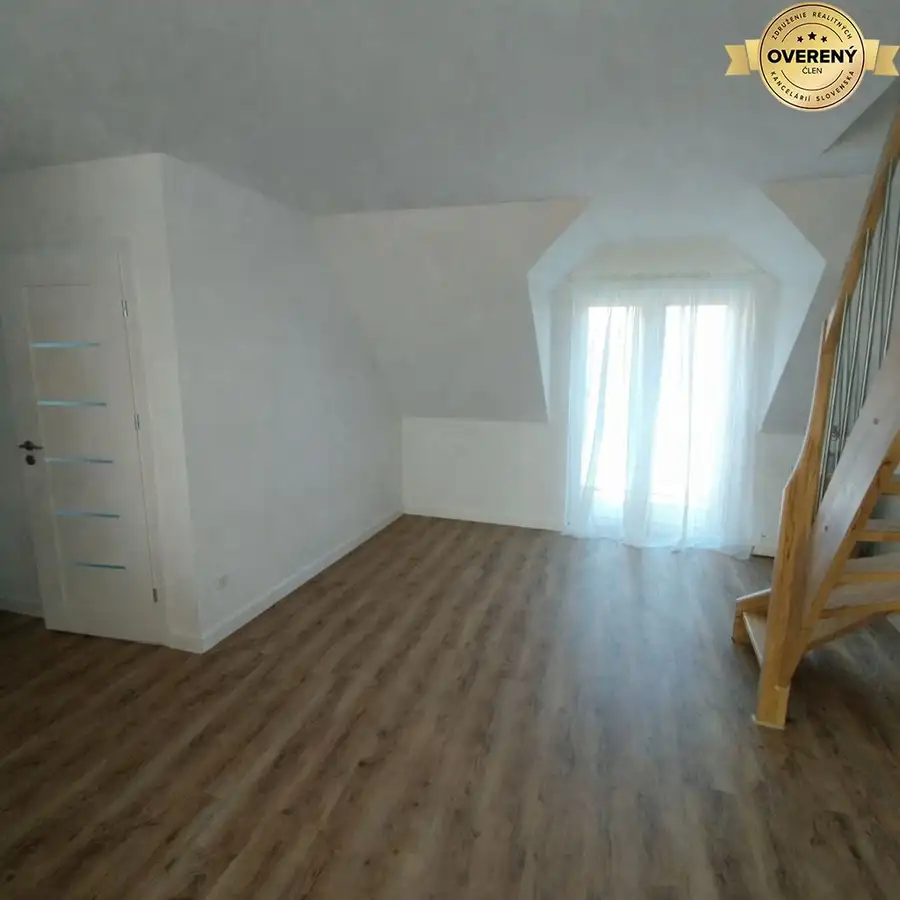
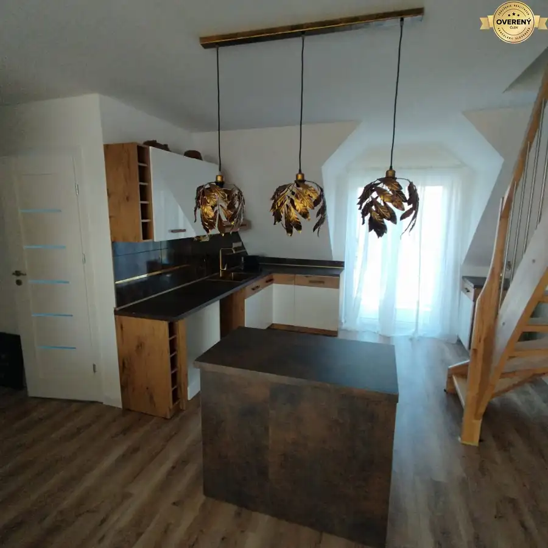
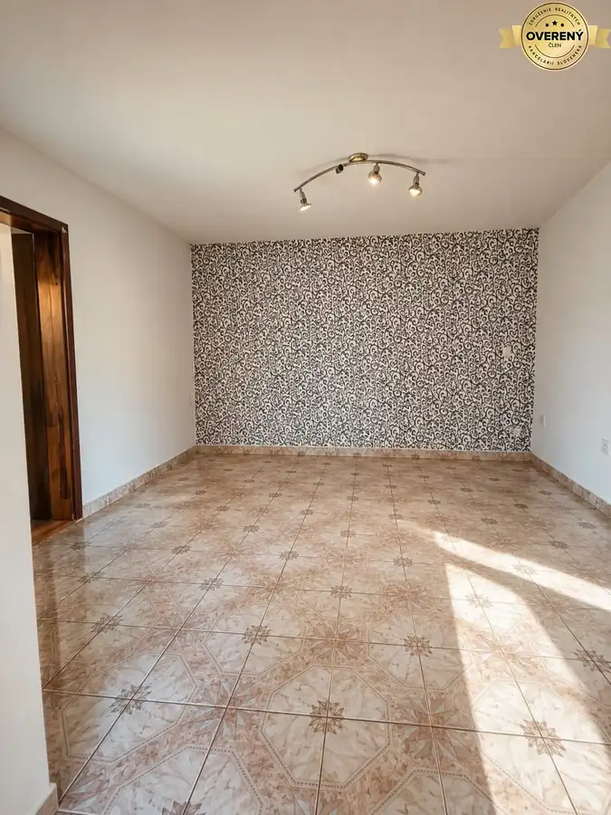
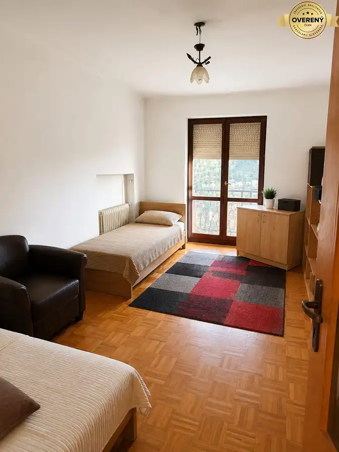
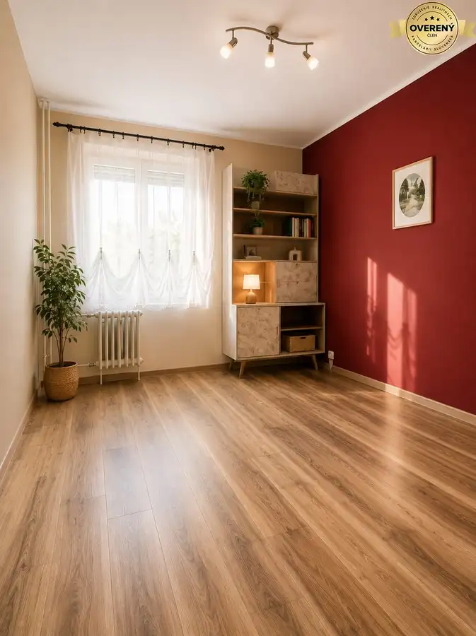
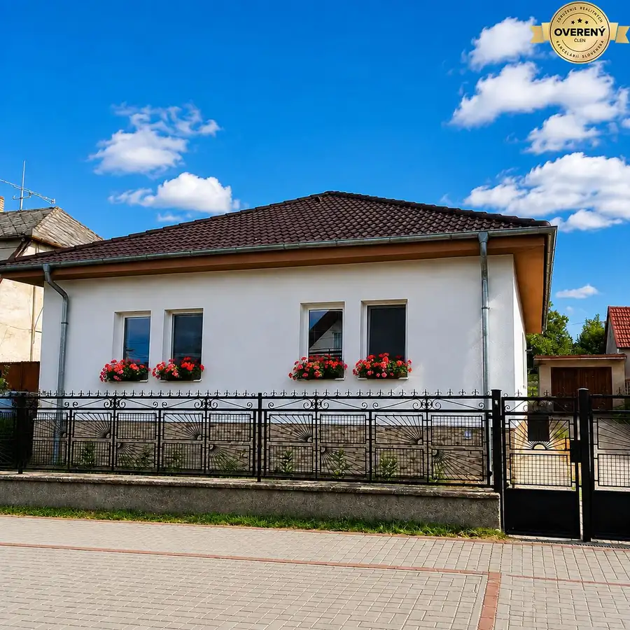
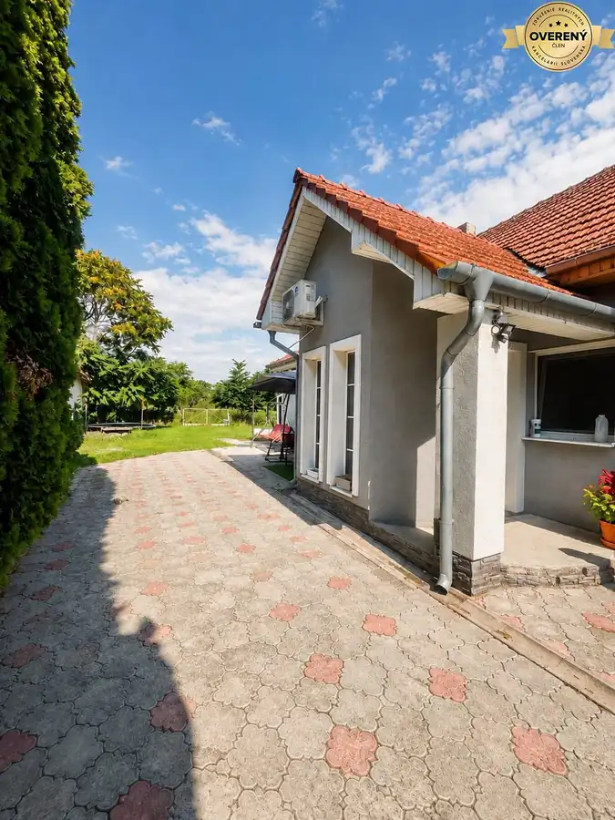

Aktuálna ponuka
Nehnuteľnosti, ktoré ponúkam
8 nehnuteľností na predaj a prenájom. Vyberte typ, alebo napíšte lokalitu.
8 z 8 ponúk

Byt2 117 200 €Moderné bývanie pri rieke – nový 2-izbový byt s balkónom v Tomášikove Tomášikovo 2-izbový52.22 m²2. podlažie Hľadáte nový byt, kde si môžete vytvoriť domov presne podľa svojich predstáv? Predstavujeme vám moderný 2-izbový byt v atraktívnom rezidenčnom…
Byt4 130 800 €3-izbový mezonet s balkónom , kuchyňa v cene, Novostavba Tomášikovo 3-izbový71.12 m² Hľadáte moderné bývanie s dostatkom priestoru, súkromím a pokojom prírody? Ponúkame na predaj priestranný 3-izbový mezonet v novom rezidenčnom… Byt4
120 400 €Posledné voľné byty! 3 izbový mezonet Tomášikovo - novostavba
Tomášikovo
3-izbový71.12 m²
Nenechajte si ujsť príležitosť na kúpu jedného z posledných voľných bytov v obľúbenom rezidenčnom projekte Bývanie pri rieke v Tomášikove. Ponúkame…
Byt4
120 400 €Posledné voľné byty! 3 izbový mezonet Tomášikovo - novostavba
Tomášikovo
3-izbový71.12 m²
Nenechajte si ujsť príležitosť na kúpu jedného z posledných voľných bytov v obľúbenom rezidenčnom projekte Bývanie pri rieke v Tomášikove. Ponúkame…

Rodinné domy6 53 000 €Znížená cena !!! 4 izbový rodinný dom v obci Selice Selice 4-izbový100 m² Dom pozostáva zo: vstupnej chodby 4 izieb, kuchyne kúpeľne technickej miestnosti Technické vybavenie: verejný vodovod kanalizácia elektrina plynové…
Byt6 120 000 €Na predaj 3-izbový byt v Šali Šaľa 3-izbový95 m² Byt sa nachádza na 3. poschodí a ponúka naozaj veľkorysý priestor. Disponuje veľkými izbami, priestrannou kuchyňou a balkónom. Je v pôvodnom stave,…
Byt8 122 000 €ZNÍŽENÁ CENA!!! 3 izbový byt v Šali Šaľa 3-izbový68 m² Dispozícia: 3 izby špajza kúpeľňa priestranná obývacia izba 2 izby s rozmermi približne 3 × 3,5 m obývacia izba približne 6 × 3 m Byt je v pôvodnom…
Rodinné domy10 198 000 €Na predaj zrekonštruovaný 4-izbový rodinný dom v Šalgočke Šalgočka 4-izbový116 m² Ponúkame na predaj zrekonštruovaný a zateplený rodinný dom v tichej lokalite obce Šalgočka. Dom má úžitkovú plochu 116 m² a nachádza sa na…
Rodinné domyRezervované10 115 000 €Rodinný dom v Seliciach Selice 5-izbový150 m² Cena: 115 000€ vrátane kompletného zariadenia Ponúkame na predaj priestranný 5-izbový rodinný dom v Seliciach, ktorý prešiel kompletnou…Tomuto výberu zatiaľ nezodpovedá žiadna ponuka. Napíšte mi, čo hľadáte.